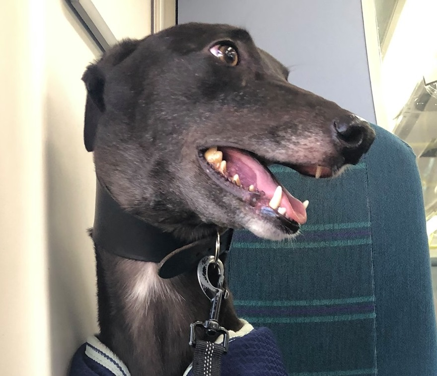
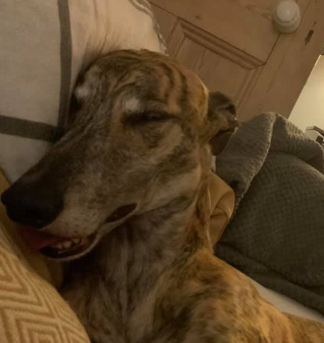

Who are they?
Tia and Woody are two greyhounds. They both are ex racers and they are 5 years old. They were both born on the 15th of December. As you can see, Tia is a big fan of tfl Woody is a big sleeper and cuddler
They are rescues. They have been with us for 1 year and we love them! Greyhounds are very chilled and yet extremely goofy.
Despite their big size, they are absolute wimps as well and they LOVE food.
This is Tia, also known asTia Maria

This is Woddy, aka Woody Woodo
